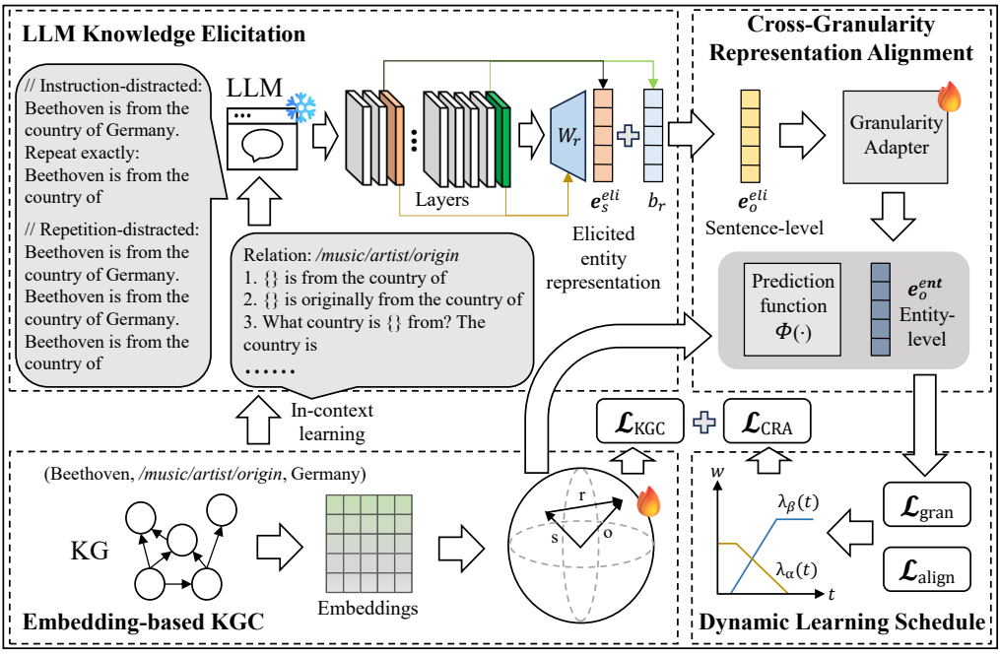
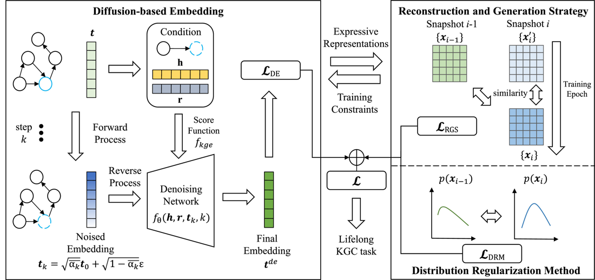
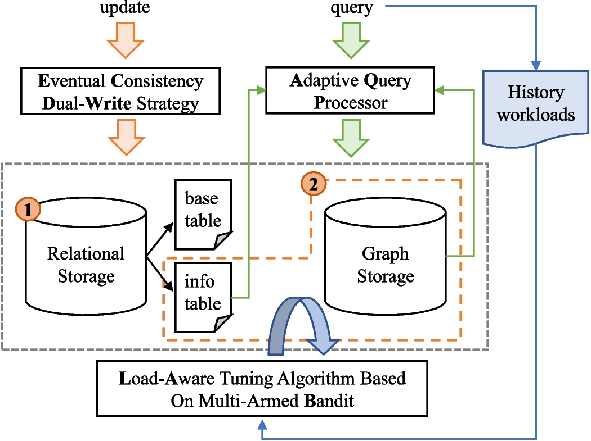
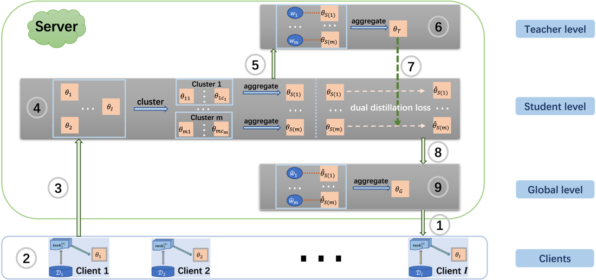
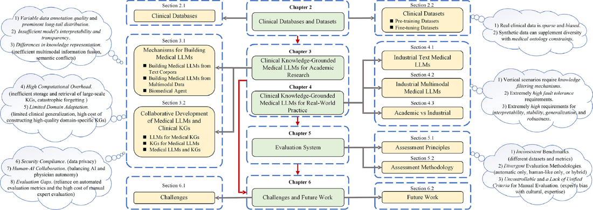
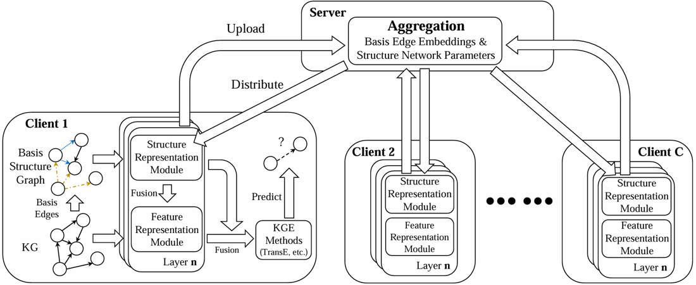

LLMs as Parametric Knowledge Sources for Knowledge Graph Completion
Deyu Chen, Qiyuan Li, Jinguang Gu, Meiyi Xie, Hong Zhu
International Joint Conference on Artificial Intelligence (IJCAI), 2026.
PhD Candidate
Huazhong University of
Science and Technology
I am a PhD candidate at Huazhong University of Science and Technology. My research interests include knowledge graphs, large language models, and the Semantic Web.
See also my Google Scholar profile.

Deyu Chen, Qiyuan Li, Jinguang Gu, Meiyi Xie, Hong Zhu
International Joint Conference on Artificial Intelligence (IJCAI), 2026.

Deyu Chen, Caicai Guo, Qiyuan Li, Jinguang Gu, Meiyi Xie, Hong Zhu
Neural Networks, 108630, 2026.

Yi Jin, Deyu Chen, Hong Zhu, Meiyi Xie
World Wide Web, 28(6), Article 74, 2025.

Mingyue Li, Hong Zhu, Erxi Wang, Deyu Chen, Meiyi Xie
Neurocomputing, 647, 130574, 2025.

Qiyuan Li, Haijiang Liu, Caicai Guo, Chao Gao, Deyu Chen, Meng Wang, Feng Gao, Frank Van Harmelen, Jinguang Gu
Knowledge-Based Systems, 114215, 2025.

Deyu Chen, Hong Zhu, Jinguang Gu, Rusi Chen, Meiyi Xie
International Semantic Web Conference (ISWC), pp. 180–198, 2024.